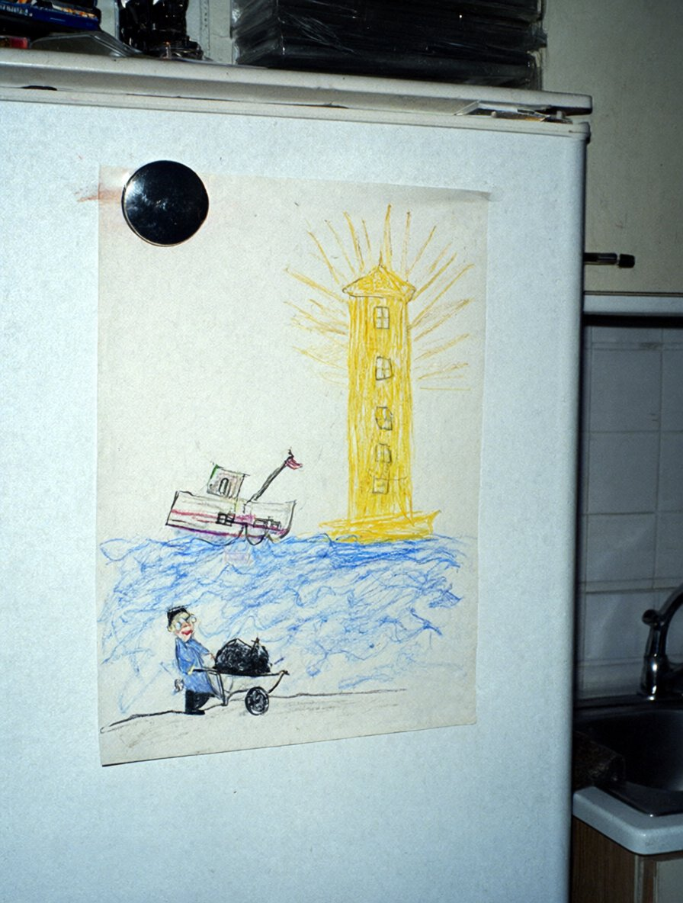

Бюро аварійних комісарів «Аварком-Південь»270011, м. Одеса, вул. Канатна, 22, оф. 5 · тел./факс (0482) 24-17-63
Акт огляду № 48/98
(будинок доглядачів маяка Вовча коса — сіни й кухня; фрагмент)
27 листопада 1998 р., 13:25–14:05с. Солоне Очаківського р-ну, маяк Вовча коса
Справа № 98/117.Присутні: аварійні комісари бюро (А. к. гр. № 1, А. к. гр. № 2); Бондар Оксана Петрівна, мешканка будинку, що надала дозвіл на огляд (усно, в присутності обох комісарів). Огляд обмежено сінями й кухнею за домовленістю з Бондар О. П.
Оглянуто:
Сіни. На стіні ліворуч від вхідних дверей, на висоті близько 1,5 м, закріплено телефонний апарат (дисковий, корпус бежевий). За словами Бондар О. П., це паралельний апарат лінії 2-17, що працює разом з апаратом у вахтовому приміщенні башти.
Перевірка зв'язку. Один із комісарів, перебуваючи у вахтовому приміщенні башти, зняв трубку апарата й почав розмову. Другий комісар, що перебував у сінях будинку, підняв трубку паралельного апарата. Розмову було чути повністю, обидва учасники чули один одного без помітних перешкод. Окремої сигналізації або клацання під час підняття другої трубки не відзначено.
Кухня. Стіл, лава вздовж стіни (за словами Бондар О. П., на ній сиділи члени екіпажу т/х «Ліман Стар» у ніч на 20.11), плита, холодильник «Дніпро». Вікно кухні виходить на затоку; двір і башта з вікна не видні.
Кімната Соні (з порога, без входу). Кімнату не оглядали, огляд проводився лише з порога за дозволом господині. Вікно кімнати виходить на башту й двір.
Холодильник «Дніпро». На дверцятах магнітом закріплено дитячий малюнок воском на аркуші альбомного формату (Фото 1). Зображено: башту з жовтими променями; кораблик, нахилений набік, у синіх хвилях; біля хвиль — маленька постать чоловічка з тачкою, у тачці щось темне. Угорі дитячою рукою написано: «НІЧ КОЛИ КОРАБЛИК СІВ. ДІДУСЬ ВЕЗЕ.» Зірок і місяця на малюнку немає. На питання комісара Бондар О. П. пояснила: «Сонин, із суботи». Малюнок не вилучався, знято на фото.

НІЧ КОЛИ КОРАБЛИК СІВ. ДІДУСЬ ВЕЗЕ.
Фото 1. Малюнок на дверцятах холодильника «Дніпро» в кухні (27.11.1998, спалах).
Інших предметів, що стосуються справи, у сінях і кухні не виявлено. Висновків цей акт не містить.